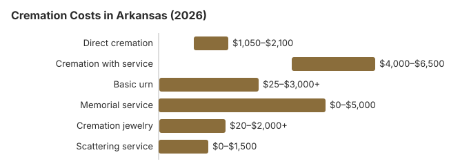

Cremation Costs in Arkansas (2026)
By our estimate an Arkansas cremation costs about $1,500 with no service and about $5,000 with a funeral first, against a traditional burial that runs about $4,600 more than cremation. Cremation is less common here than in most states: 42% by the rate we use, 21.4 points under the 63.4% national rate NFDA projected for 2025. This page covers the prices, who may authorize a cremation under Arkansas law, the coroner's role, and where ashes may go.
Arkansas Cremation Choices
Direct Cremation
- The cheapest choice in Arkansas
- No service is held first
- Taken from the place of death to the crematory
- The family receives the ashes
- A memorial can come whenever the family is ready
Cremation with Service
- Funeral first, cremation afterwards
- A visitation can be part of it
- At a church or in the funeral home chapel
- Often priced with a simple urn
- The nearest thing to a traditional funeral
Arkansas Cremation Charges, Item by Item
| Item | Arkansas estimate | Typical spread |
|---|---|---|
| Direct cremation | $1,500 | $1,050 – $2,100 |
| Cremation with service | $5,000 | $4,000 – $6,500 |
| Basic urn | $50 – $300 | $25 – $3,000+ |
| Memorial service | $500 – $2,000 | $0 – $5,000 |
| Cremation jewelry | $50 – $500 | $20 – $2,000+ |
| Scattering service | $200 – $600 | $0 – $1,500 |
Where the Arkansas numbers come from: our price model, not a canvass of Arkansas crematories, so treat them as a yardstick and not as a quote or professional advice. See our method for the details, and our disclaimer.
State sources: Ark. Code Ann. § 20-17-702.

Keeping an Arkansas Cremation Affordable
Two steps that usually lower the price:
- Collect written price lists. Any Arkansas funeral home must hand over its General Price List on request; set the direct cremation lines from three of them side by side.
- Price the direct cremation on its own. A package can hide what each part costs, so ask for the separate direct cremation price and what it includes, such as transport, the crematory fee and a temporary container.
Who Can Authorize an Arkansas Cremation
Arkansas sets out who decides:
- The Arkansas Final Disposition Rights Act (Ark. Code § 20-17-102) lets any adult of sound mind sign a declaration choosing cremation and naming who will carry it out; it must be witnessed by two people, and once it is valid no one else's consent is needed.
- Without a declaration, the order runs from the spouse to the majority of the surviving children, then parents, siblings, grandparents and grandchildren; a person named on a service member's DD Form 93 outranks everyone.
- Find out how soon the crematory expects to return the ashes after the coroner's authorization and the permit, and whether the quote covers delivery or only collection.
Cremation and Church Tradition in Arkansas
At 42%, Arkansas cremates well below the national rate, and families' church practice is one reason some still prefer burial. Where the family's faith allows cremation, our estimates put it about $4,600 below a traditional burial in Arkansas.
Cremation Resources
- Funeral Consumers AllianceNonprofit advocacy: compare cremation providers
- Cremation Jewelry GuideMemorial keepsakes and remembrance options
- Cremation vs. Burial CostsSide-by-side cost comparison
- Pet Cremation CostsOptions and prices for pet cremation and memorials
- Final Expense InsuranceCoverage options to help pay for cremation costs
Compare Funeral Costs
- Average Funeral Cost in 2026National cost breakdown with real prices
- Cremation vs. Burial Cost ComparisonSide-by-side price comparison to help you decide
- Funeral Cost BreakdownEvery line item explained: know what you're paying for
- Cheapest Funeral OptionsLower-cost alternatives, with typical price ranges
- Direct Cremation: Most Affordable OptionNFDA 2023 median $2,645 with a family-supplied container (latest available)
- How to Compare Funeral PricesStep-by-step guide to getting the best price
Frequently Asked Questions
How much is a cremation in Arkansas?
On our figures an Arkansas direct cremation is about $1,500, and a cremation that follows a viewing or funeral is about $5,000.
Which kinds of cremation can an Arkansas family pick?
Arkansas providers usually offer three: direct cremation at about $1,500, with nothing beforehand; a memorial after the cremation, on whatever date suits the family; and a full funeral followed by cremation at about $5,000.
What must be in place before an Arkansas cremation?
Arkansas sets no waiting period before cremation, but the crematory needs a cremation authorization signed by the authorizing agent and a death certificate (17 CAR § 30-205).
When the death is a coroner's or medical examiner's case, that office must authorize the cremation before it can go ahead (17 CAR § 30-208).
The Arkansas Insurance Department's Funeral Services Division (501-682-0574) takes complaints about how a crematory or funeral home handled these steps.
Where may ashes go in Arkansas?
Yes, within the options listed in 17 CAR § 30-209(c). Cremated remains may be placed in a dedicated cemetery grave, crypt, niche or scattering garden; scattered on uninhabited public land or over the sea or a public waterway; or scattered on private property whose owner has given written consent to the person with the right of disposition. The rule expects the remains to be processed to particles no larger than one-eighth of an inch and taken out of their container, and it allows the use of a boat or an airplane.
Remains a family never collects may be disposed of by the provider after 90 days. Crematories are licensed by the Funeral Services Division (501-682-0574), which also hears complaints.
Why do Arkansas families choose cremation?
Cost is a large part of it. Our estimate puts cremation about $4,600 below a traditional burial in Arkansas, and the family can hold the memorial when it suits them. The state's 42% rate is still 21.4 points below the 63.4% NFDA projected nationally for 2025.
How long does an Arkansas cremation take?
The cremation takes 2 to 3 hours. With no waiting period in Arkansas (17 CAR § 30-205), a direct cremation ($1,500) is usually quickest, since only the authorization, the death certificate and, in a coroner's case, the coroner's release stand in the way.
Can an Arkansas family hold a funeral and then cremate?
No. Only direct cremation drops the service. A visitation and funeral before an Arkansas cremation costs about $5,000 on our estimates (usually $4,000 to $6,500), more than three times the roughly $1,500 for direct cremation ($1,050 to $2,100).
Many families split the difference: direct cremation, then a memorial with the urn at a church, park or home. If the body will be present at a service and cremation will not happen within 48 hours, Arkansas requires embalming or refrigeration (Ark. Code § 20-17-107).
More for Arkansas
Coroner authorization at an Arkansas crematory
When a death falls under an Arkansas coroner's or medical examiner's authority, a crematory may not even accept the body until the coroner of the county where the death occurred, or the medical examiner, has authorized the cremation. A crematory that also runs funerals may take the body in sooner, but still cannot cremate before that authorization arrives (17 CAR § 30-208; checked October 29, 2026).
- Embalming not needed at first: once the family has chosen cremation, embalming or refrigeration is not required for the first 48 hours after death unless a health problem calls for it.
- At the crematory: an unembalmed body may be held no longer than 24 hours unless it is in a refrigerated facility, so ask whether a refrigeration charge applies if the authorization is slow.
Who licenses Arkansas crematories, and help with the cost
In Arkansas, crematories and funeral homes that sell cremation are licensed through the Arkansas Insurance Department's Funeral Services Division (501-682-0574); call it to check a license or to complain.
Arkansas is missing from the Funeral Consumers Alliance list of nine states that restrict family-directed care, so a family with the permit and the signed authorization can deal with a crematory itself.
There is no waiting period. The crematory needs the authorization signed by the authorizing agent and a death certificate (17 CAR § 30-205), and in a coroner's case the coroner's or medical examiner's authorization as well (17 CAR § 30-208).
When no one can pay
Arkansas has no statewide funeral payment. The county court, presided over by the county judge, decides on pauper burials and can order an indigent cremation, but first whoever holds the body must search for next of kin, including a check of veteran status (Ark. Code Ann. § 20-17-702). Social Security's $255 death payment to a qualifying spouse or child pays only part of the $1,500 direct cremation estimate.
An eligible Arkansas veteran's ashes can go into a national cemetery columbarium or an in-ground site with no charge for the space or the marker. Arkansas has Fort Smith National Cemetery (479-783-5345) and Fayetteville National Cemetery (479-442-2566), and state veterans cemeteries at Birdeye (870-588-4608) and North Little Rock (501-683-2259); see cem.va.gov.
Arkansas checklist
- Have each provider itemize transport, the container and the crematory fee before choosing.
- Ask whether the coroner in the county of death has to authorize the cremation, and how long that usually takes.
- If no one can pay, ask the county judge's office whether the county court will order a cremation and what it covers.
- If a family member signed a declaration under Ark. Code § 20-17-102, bring a copy to the provider.
- Keep the Funeral Services Division number, 501-682-0574, for any complaint.